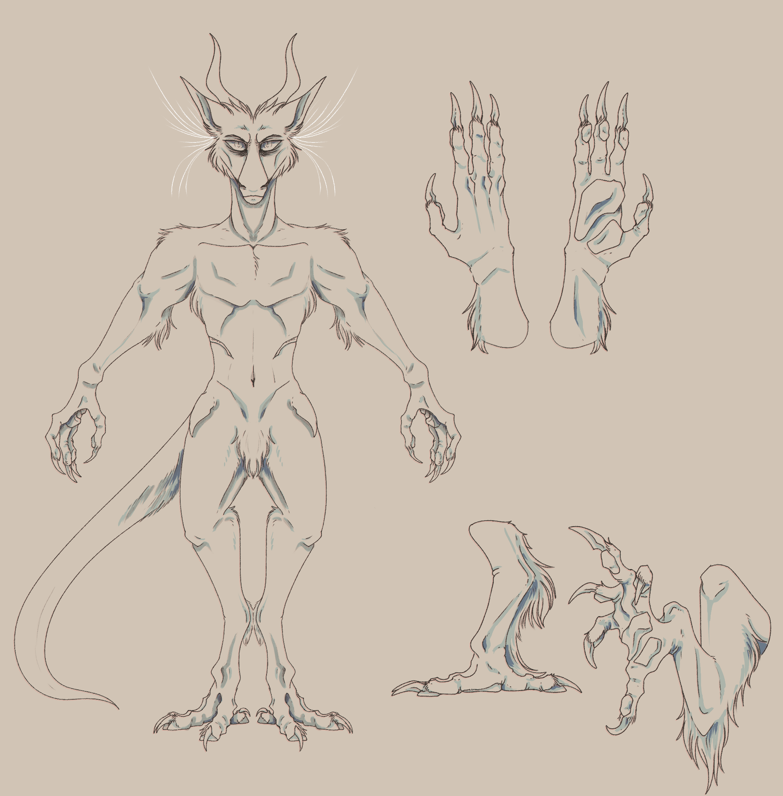

Dragomii
An Overview
Dragomii
Dragomii are a alien species, one of the three base sophonts of Sertha. They present as large heavy canivores. Obligate carnivores at that, and extreamly quick to anger. While they are covered in mammal-like fur, and bear offspring as mammals do. Dragomii are not mammals, Terramagnus is the class that Dragomii are consolidated under. Dragomii do not possess breasts and lack any milk producing ability, their infants are fed meat from the very start of their lives. And like life on Sertha, Dragomii are eternal. They will not die unless disease, accident, poision, or blade takes them. Which gives them an extreamly alien mental state and fortitude. Here lies a comprhensive guide to their physiology, biology and genetics, and mental fortitude.
Genetics Briefing
Dragomii function on an extreamly complex genetic code. DNA passed down from parents only makes up two thirds of a descendant, the third comes from a dominant resendant . When two dragomii reproduce one parent will take dominance over genetic code passed down, normally this is the individual who will carry the spawn. This dominant parent will become a dominant resendant if their spawn chooses to reproduce. Two dragomii with grey coats both could reproduce and end up with spawn of a completely different color and height due to the override DNA of the dominant resendant. This system of dominanace stems from their high resistance to radiation, since one individual can substain significant genetic damage yet have their dominant resendants genetic info to fall back on. Sometimes the stored resendant information can decide to override the genetics of a dragomii, changing coat color, length, patterns, arm length, eye color, and more.
Phenotype, Genotype, Halgantype, Exthertype, Sablsatype, and Magnaratype control how a dragomii looks. Halgantype and Exthertype control the coat color and markings, Sablesatype and Magnartype control a dragomii's general apperance. An example of a Magnaratype would be The height of a dragomii. As it is controlled by their STH type, or Segmented Trait Height Type. Height in dragomii is based on the dominant parent and dominant resendant.
Halgantype is a modifier that changes the looks and appearances of existing well known patterns, patterns who otherwise would be unaltered. As in the genetic info that controls stripes
should only produce stripes yet now the stripes have started to bleed outwards. Despite the genes for that pattern not dictating that, instead another set of alleles
has taken presidence and caused alterations. Halgantypes are harmless and can even be sought after, since one would want a pretty heir.
Exthertype however has the chance to
be harmful and lethal. Exthertype will either be a TY1(Harmless) or a TY2(Harmful). Exthertype commands the dominant ascendants genetic info to override the individuals.
In both TY1 and TY2 it will present as patches/patterns of the dominant ascendants apperance (These patches will be far more melanated). In TY1
these patches will only affect coat color, texture, and fur length. In TY2, these patches will affect the coat, flesh, organs, and bones of the individual. Forcing those areas to conform
to a 'copy paste' of the dominant ascendant. Resulting in mismatched flesh, organs, and bones. Sometimes those with TY2 fall appart as their flesh cannot properly hold form. This can happen
early in the womb, birth, or at any stage of life. Individuals with TY2 depending on how much of a match they are to the dominant ascendant can be fine, though normally the majority of those
affected have chronic lifelong condidtions. Depending on the severity of the TY2, one could be helped or they could slow the process of falling appart at the seams.
Magnaratype and Sablesatype control general apperances. Due to dragomiis segmented bodies and extreame adaptation traits and physical features are once again partitioned into different areas. Magnaratype is the type all animals who belong to the Magnus class have. Dragomii (Terramagnus) therefore rely upon this branch for their apperances. Ears, tails, snout length, teeth, eyes, horns, and the like are all controlled by the Magnaratype. Sablesatype is the same, but it is mainly used for Sable'sa (Serratamagnus). Note the use of magnus classification, both traits can be interchanged between the two species. As Dragomii and Sable'sa ride the line between being able too and not being able to reproduce with eachother. A line rode so thin each hybrid can vary in the extreams to how they look, and how well their health holds up. Most hybrids are fertile and capable of reproducing.'Purebred dragomii' will only possess Magnaratype. Hybrids or those with Sable'sa in their lineages will present and have recessive Sablesatype alleles.
Due to their highly segmented and adaptive nature, a winged trait has evolved. Originally this trait was only reserved for the Dalakin race. And through the years it has been passed down. Certain lineages are capable of keeping their orginal arms, and having the wings sprout from their back. Though that type of wing is hard to come by, instead the arms often end up being replaced.
Intelect and Nature
Dragomii are rather inteligent beings, when they slow down and focus that is. On average an individual would be considered decently smarter than humans, the gift of eternity is to thank for that. Dragomii while sociable, inteligent, and agreeable. Are wild animals.Unlike humans these beasts have not domesticated themselves, they still possess every animalistic instinct and desire. And being instinct driven animals, they despite being fairly smart, will most often act first think later. Which has created their extreamly durable bodies by way of evolution, as those unable to sit, concentrate, and think often end up killing themselves by way of idiotic move.
Biting, clawing, snapping, hissing, barking, nesting, and growling are common standard behaviors. They will snap at eachother and chase after small prey. Alongside spoken and signed word, dragomii like bees do have complex and intricate dances and combos of movement that will quickly get across a complex message. The shaking of the head, swaying side to side, and other more complex and exaggerated movements are performed to convay emotion and message. Dragomii often speak in sing-song tones of voice. As with a universal deep love and connection to culture and piety, it is only natural their spoken words are to take upon aspects of that. Which in most cases express as speaking in song. Though topics that are serious or dire often do have individuals speaking normally, as to convay dire tone. This aspect of song interwoven into speach acts as more identifiers for tone and meaning.
Dragomii generally do not care for the bodies of the dead, this is in part to their wild nature. And their extreamly violent tendancies, for the reason they have so many context clues and expressive signs. To avoid fights, as dragomii have a temper hotter than the deepest pits of hell, they can, do, and will kill if they feel challenged and if the other accepts their duel. As far as they are concerned, The Cycle will take the dead and march ever onward. As long as ones temper is not tried and their boundries not forced, and small nips and warning growls listened too. One should have little issue getting along with and agreeing with these beasts of a violent nature. They do not have anything hardwired into them as to produce torment upon killing another of their kind, and dragomii do encourage cultivated and careful violence. This general disregard for for the dead sees them recycle the fallen into various tools and materials.
Dragomii are very emotional beings, and thus have emotions only they can understand.
Alien things that only vauge words can describe. They are as listed:
- Vincoverack
- - An emotion that cannot be defied, it is one they all fight against lest the alien semblance of rage and black bitter death mired in hollow insanity take hold. Drive them to be nothing but a beast of rage, langar, sorrow, agony, and vengance.
- Kilhia
- - An emotion of longing and fond memory, something of a happy recall. Yet hollow lust and long simmer at its edges. Often driving one into a rage if felt for too long.
- Brumar
- To challenge lifes hellish fire, to smile in face of indignity. A stride, a pride, drunk with happy hellish mire. To not be defied in soul, and in attempt of body.
- Mithoul
- Cracked smile and happy saunter, for the dead so speak neither here nor there. Trapped they speak for the world yet do not hear their words, to smile and embrace that rememberance. Sweetest story to be forgotten, details mired, yet memories remain.
- Langar
- - The feeling of entrapment eternal of a void. A grey brown place mired in fog of memory, memory clouded by older stranger desire. Yet solemnly out of reach, a sweet and agonizing sort of thing. Yet with a deeper pain to manifest physically.
- Beseer
- - Penitence of an unimaginable radial desire, a need, a fight, to rake the skin and tear the flesh. To consume the blood of their profane and grotesque forms. To snap brittle bone and dig out eyes in service of thine lord.
- Morolt
- A love deeper than one can handle, a bond shared by two. Something to kill the other if one dies, something to split maw and break jaw if mate shall fall. To cry ranchor and to die. To entertwine and live as one, two beings of the same, emotion and hunger shared. Rage and hate ensnared.
- Rotacal
- - The emotion of the damned, of the pious, of the rotten. Where the sins of past writhe and crawl, burst into blood under skin. The rot consumes and it demands Exhaustance and bitter defiance embodies this alien thing.
- Cyacrafar
- - The call of the void, as The Cycle and and its commander Existence call back. A deepfelt need to climb that spire, a need of transcendant longing. Of transcendant exhausting, solemn and happy, the feeling of a skull cracking and a neck snapping. A hollow pious chill to creep down their back and encircle eyes.
Height and Weight
Dragomii stand on average at a height of 10ft. At their tallest they stand at 17ft and at their shortest they stand 7ft. (Excluding disabilities such as dwarfism covered later in theis section). This vast range of height is due to their exceedingly complicated genetics and segmented bodies(Although they do not visibly display this.) At 10ft they are classified as Ralgeir (STH-RLGR). At 15ft-17ft they are classified as Algoreth (STH-AGRH). And at 8-7ft they are classified as Inferi (STH-INFR)
Dwarfism in dragomii happens and often is not caught until teen years due to the range in height. All three body types are affected and all differently. Classic tell-tale signs
in Ralgier and and Algoreth both will appear to be Inferi and Ralgier. But their limbs will be stubbier than they should be, and their skulls will present with thicker and heavier densities.
Back problems are far more common in these individuals, scolosis to name one. As well as ribs cramming in their chests, leading to a perpetual shortness of breath and on occasion perforation into vital organs.
Dwarf Inferi will present as the shortest of the short, at 5-6ft they are the most easily seen and adressed.
Dragomii are heavy beasts. Weight can vastly fluxiate, and calculating a healthy weight is far harder in them. For there are many factors that contribute to how heavy an individual is. Such as bone density, bone composition, bone coating, do they gait, do they walk, how active is one, and where do they live. An average weight is hard to come too, generally it varies depending on race, region, city, and sleep habits. Though generally they will sit anywhere inbetween 1750 and 3000 pounds.
Gaitors
The varying height differences aid the dragomii in different ways. Smaller individuals are far better at long distant runs and jumps, as well as climbing into higher trees than their taller heavier kindred. The bigger the stronger, these differences have seen dragomii form packs. In both cities and wild these packs are formed either intentionally or not.
Gaitors are dragomii who choose to walk upon all fours. Often will gaitors develop adaptations that see them gait with more efficiency. Carrying things in their mouths and in saddlebags is how these individuals get around. Long term gaitors often will act as mounts for others, a sort of trade and barter taxi service. Or you will find them as imposing battle mounts. Gaitors will find their fingers over time becoming more splayed, their wrists and arms will become far more bulky. But above all they will find their spine shift and twist to accomodate for the new common position they find themselves in. Their metabolisms will speed up compaired to those who walk on both legs, this is in part due to how their organs and bones have shifted. And how their bodies will start to rapidly adapt. Old gaitors may resume a normal metabolism depending on their level of acivity. As a result gaitors need to eat much more and weigh less than their non gaiting kindred.
Teeth
Dragomiian teeth rely on the dominant ascendant. Their bodies should alone take the needed information and dump the rest. As teeth are a relativly static body part. Dragomiian teeth are not coated in enamel or otherwise biological protection. They are extreamly hard outcroppings of bone.
Rather teeth grow as spikes from the skull, there is no loosing and regrowing of teeth as a human child might. The most fluid teeth will be presents in the Ripteeth of infants. Where their mouths are lined with both smooth and serrated fangs, all round
the roof and bottom of their mouths with the sole goal of shearing flesh from bone. These are the only teeth a dragomii will drop, and they will never regrow. Some individuals will fail to drop these teeth, but the occurance is rather rare and doesnt
pass down unless one lineages.
Different individuals may possess vastly different amounts of teeth, hyperdontia is fairly common among their kind. Braces are a thing of which dragomii do not use nor would they understand, as for as long as they can still eat
there is no issue. Crooked and misaligned teeth happen, as well as fangs so large they poke over ones lips.
Sometimes the resendants and parents genetic info for teeth does not drop. Instead it merges improperly with the already set teeth data. This can result in half merged teeth as seen in Fig.1 and Fig.2. These half formed teeth can prove to be health issues later down the line yet can serve as shredders in case of battle. Sometimes the data is half formed and what should be smooth and uniform can become jagged and improperly serrated. Its possible for all of these malformations to occur in one individual.
Over the course of ones life, teeth will continually darken. With the older gaining black teeth. Metal will as well with age and exposure start to coat the teeth. Giving them a sheen with a color dictated by the type of metal that coats ones fangs. This acts as extra protection for the exceedingly hard bone. Dragomii lack specialized teeth, they possess only sharp canines. No molars are found and thus they have no way of chewing, instead their sharp teeth function as shredders for the tougher meat they eat.
Tongues
Dragomiian tongues are prehensile and capable of wrapping around objects and the like. Generally they should not extend five inches past the lower jaw. Yet on occasion some can have freakishly long tongues, as example: Arch Warlord of Liderea Pyrewarth has a freakish two foot longue tongue. Individuals with these longer tongues are capable of somewhat fighting with them, in close quarter they can act as a last ditch insult of a slap. Otherwise they besides tasting use their tongues as emotional indicators. Curling, extending, flaring, and flicking are all vital for communication between individuals. The long tendrils upon their tongues are as well prehensile though to a lower degree. These tendrils take to the cleaning of the teeth, through idle or intentional movements they keep the mouth clean.
With the lack of specialized teeth, their musclular tongues have taken the role of crushing and strangling food. Capable of tightening around an object in an attempt to crack or soften it, things like bone weakened by teeth can be opened by their tongues for the marrow inside.
Faces
Life on Sertha breathes through holes in the jaw refered too as nostellae. The amount on Dragomii can vary, this unique way of breathing helps them eat and not choke. As the lack of specialized teeth and ability to chew has them swallowing most things whole. A normal airway would be blocked easily. But the use of multiple windpipes allows them to shift and bend around the object in the throat, keeping the flow of air steady and preventing choking. These multiple windpipes and their placement under the jaw do not assist the dragomii in cases of drowning. And serve in making it much harder to breathe while in water. As more effort is needed to keep their heavy bodies treading water and to keep their jaw above water.
These windpipes can be flared to produce what they will read as an 'Intimidator' signal. Though other intimating signals are used as to avoid extream uncomfort. As well as flaring them, an individual could whistle rather complex tunes and songs, willingly choosing which windpipe of which to breath and exhale through. Additionally, one can breath while speaking leading to more complex song. Trauma to their throat can result in one or more bleeding, though unless it is major theyy should be rather ok. Enduring situations like this one the daily.
Dragomii have an extreamly perceptive smell, with their kind very notably being able to smell anger/rage. An adaptation befiting creatures of their fiery temperment and violent tendancies. The smelling organ is located on the top of their nosebone, it as well as being sensitory can contort to help the dragomii emote. Nosebleeds are common injuries, and with their face-biting behavior the organ is suited to heal fast. It is as well capable of expelling a visible cloud like condesnsed breath, this serves as a way to warn others of a building temper and rising danger.
The long white whiskers on dragomii sprout from the base of their ears around the back. They are capable of minor movement to aid in emoting, such as being able to lift them up and down. These whiskers serve a variety of purposes. The most common purpose they serve in Modern Era, City life
is to detect passersbys and wind pressure and speed. They help the dragomii figure out wind direction and if a wind storm is on the rise, a vital adaptation for Serthas volitile and dangerous weather. These whiskers typically form in mid toddler years, they start off short and often will remain short until
having a grow-spurt in their young adult years. Additionally if an individual suffers a stressful illness, it can prompt the whiskers to grow much longer. An adaptation to give the affected individual more time to sense and flee coming storms in their weakened state.
Polywhiskeriate is a harmless condition dragomii who manage to sprout whiskers where they should not be growing. Such as around their eyebrows, cheeks, chin, top of their muzzle, and the like. These individuals noteably have issues with air conditioning and light weather.
Given their extreme sensibility to changes in wind and air pressure.
Eyes
The eyes of a dragomii are extremely colorful, with too many different variations in color to count. The eyes of a dragomii are extremely fragile, being sunken into the skull as to avoid eye trauma. Large brow bones and higher cheekbones keep the fragile organs safe. The colorful organs
are more liquid than solid. They are capable of seeing more colors than humans, and very few shades of ultraviolet light. Not enough to be useful or impact much but enough to identify hidden patterns and the like on their kindred and others.
Being more liquid than solid, their eyes do
not have any sort of iris texture. Only a lighter patch of flesh circular in nature rests under the slit in their eyes. They have two pupils per eye, when the eye is at rest it presents as a slit with a half moon shape under the slit. When in active use, if the individual wants to focus upon
different targets at once. Both pupils can shift and move within the eye to allow for more direct focus.
Bones
The bones of a dragomii are extremely dense and heavy. With metal accumulating and coating/strengthening the bones over time, typically after the fiftieth year of life (juvenile/young adult). The integrated metal varies extreamly, one will end up with a mix of different materials. Individuals who work with certain types of metal will have a much more concentrated accumulation of said metal. This includes lab made and alchemy-made materials(Alchemy materials oft led to complications due to extreame instability). Bismuth creators for example will start to accumulate bismuth, though due to its brittle nature this often doesn't lead to any advantages like other metals would. Instead, it leads to a very pretty skeleton, bones of bismuth accumulated individuals often find themselves pretty trinkets. Lead is among the most common with metal accumulation, quite literally being bred into their lines. Lead among being one of the main coaters finds itself in every bit of their body. With metal accumulation dragomii do not take kindly to strong magnetic fields nor do they take kindly to any sort of electricity. Nor does this metal buildup assist the individual in swiming, instead it allows for the individual to fall from impressive heights and walk away with only a broken rib or two at worst.
The thick bones are strung together in a rather interesting formation, and allow for extreme flexibility within the dragomii. While the bones may look like a nightmare, their muscle systems both, and ligiments are strong enough to allow them to yield undeniable strength. With the bones able to shift in many directions, falling is uncommonly fatal. Since upon striking the ground from a impressive height individuals will get slightly jumbled up, instead of seeing their bones break shatter and pierce their organs. Bone plates sit in their chests and forearms, acting as natural shields as well. Capable of taking quite a beating. Their skeletal build comes from their orgin in cave systems. With the precursor dragomii having to be able to loosen and shift the bones in its body to avoid entrapment in tight passage and dire turns.
Additionally, the small bone spur at the base of the hip acts as a solid bone casing for nerve clusters. With that being one of the first spots to have metal accumulate as to protect a vast amount of nerves. Breaking the hip spur is quite the task yet it is one of the most painful things a dragomii is capable of experiencing. Weeks after the injury do many still beg for death and do some take their fate into their own hands. It is not a kind injury, as the majority of the pain receptors for the lower groin and belly is stored there. These nerves are delayed, meaning if injured in the belly area the dragomii wont feel the injury all at once, rather the pain is lessoned and partitioned mostly to those nerve clusters. The breaking of the spur will cause as individual to feel pain around the break and up and down their middle for a variable amont of time afterwards.
Muscles, Internals, and Diet
Dragomii are in possession of two muscular systems. One that takes care of pulling and pushing the skeleton, and one that exaggerates those movements. Adding a sense of brutish power behind every movement. This extra flesh upon the dragomii acts as more armor and insulation against cold weather. Their muscles are as well riddled with stray bits of metal and the like, with the exceedingly rare possibility of a gem or pearl of sorts forming with in tissue and only being discovered after death or x-ray.
Blood vessels are burried under the first layer of muscle, with the outer muscle being supplied with blood from underneith. Due to this dragomii do not bleed much, only deep gashes can and nose injuries lead to excess amounts of blood. A dragomii's blood has a hefty amount of pyrite found within it, as well as lithium. Leading to flamable blood that is used in both machinery and lighting. Generally, blood types are not too important, as dragomiis rapid ability to adapt will see them make it work. Though individuals in especially dire states will need a matching blood type.
The organs of a dragomii and like all other life on Sertha have been mostly moved to be stored within the chest and lower groin. Their midsection only a mass of hard muscle and fat. Dragomii have two hearts, one the main pump for blood. And the other while not a true heart, is still classified as one due to its ability to pump blood in case the main heart goes down. This pseudo-heart as well doubles as a respiratory organ. The pseudo-heart is capable of making different gasses and materials work when oxygen is out of the question. Converting and forcing it into a useable state. While it keeps the dragomii alive, lasting effects and mental status often become very questionable.
Dragomii being blast furnaces for nutrients rarely produce waste, due to their size and activity. If they need to spill waste, it is vomited back up. They have no other way of clearing themselves, ejected meals are typically bones too hard and tough to digest. Obligate carnivores, only certain types of flora are safe for them to eat. Non meat based flora are the most dangerous to a dragomii, their bodies will try to see what they can do with the plant. And subsequently, will end in a horrid agonizing death if they eat too much of the incompatable flora. Instead, they should opt to eat meat based flora and those lifeforms inbetween. Being obligate carnivores, and with their megastructure cities and violent nature. The excess of dead and their exceedingly lax attitude for it births a need for cannibalism. Those who do not opt in to funeral services, will find themselves in a Chopshop.
Reproduction and Sex
Dragomii are extremely carnal beings, they do not shun sex for recreational nor recreational needs. As lust is a deep seated emotion that cannot be denied given their wild nature. Redhalls are some of the more common buildings found in cities and settlements, with there always being a large demand for Whores. Only fringe communities shun their nature, as the majority of the species finds no issue.
Being hermaphrodites, one need only find another to reproduce. Again, no urine or subsequent waste product is produced. Genitalia are purely for recreation and reproctional activities. Dragomii have purely internal reproductive organs, nothing that is not being currently used will hang outside the body.
Dragomii have live births, and their young start eating meat from the second day they live. A birth is pretty hard on an individual, since they have a sort of female hyena situation on their hands. Typically unless one assumes the position of Sire or Dam their first birth will be their last.